介紹可自行架設並支援 npm, NuGet 與 Maven 的套件管理工具 - ProGet
ProGet 是一套支援多種類型的套件管理框架並可自行架設服務的工具，單以套件管理的功能來說免費版本與付費版本支援依樣多的種類，而付費版本是強在針對災難復原與服務高可用性的一些附加功能上。
目前有支援的 Feed 種類:
- NuGet (.NET)
- Docker
- PowerShell
- Ruby Gems
- Visual Studio Extension (.vsix)
- Maven (Java)
- npm (Node.js)
- Bower (JavaScript)
- Chocolatey (Windows/Machine)
- Universal (Application/Platform)
ProGet 也有 SaaS 版，有興趣的可以參考ProGet-SaaS，功能整理如下:
| Features | Free | Basic | Load Balanced-Only | Enterprise(High Availability) |
|---|---|---|---|---|
| Unlimited Users | ✔ | ✔ | ✔ | ✔ |
| NuGet Feed | ✔ | ✔ | ✔ | ✔ |
| NuGet Package Symbol Server | ✔ | ✔ | ✔ | ✔ |
| PowerShell Feed | ✔ | ✔ | ✔ | ✔ |
| Docker Feed | ✔ | ✔ | ✔ | ✔ |
| Ruby Gems Feed | ✔ | ✔ | ✔ | ✔ |
| VSIX Feed | ✔ | ✔ | ✔ | ✔ |
| Chocolatey Feed | ✔ | ✔ | ✔ | ✔ |
| npm Feed | ✔ | ✔ | ✔ | ✔ |
| Bower Feed | ✔ | ✔ | ✔ | ✔ |
| Maven Feed | ✔ | ✔ | ✔ | ✔ |
| Deployment Records | ✔ | ✔ | ✔ | ✔ |
| License Filtering | ✔ | ✔ | ✔ | |
| Connector Filtering | ✔ | ✔ | ✔ | |
| Feed-level User Privileges | ✔ | ✔ | ✔ | |
| Active Directory Integration | ✔ | ✔ | ✔ | |
| Package Retention Policies | ✔ | ✔ | ✔ | |
| Package Statistics/Metrics | ✔ | ✔ | ✔ | |
| Cloud Storage | ✔ | ✔ | ✔ | |
| Package Promotion | ✔ | ✔ | ✔ | |
| Vulnerability Scanning | ✔ | ✔ | ✔ | |
| Custom Licensing Agreement | * | ✔ | ✔ | |
| Load Balancing Support | ✔ | ✔ | ||
| Multiple Web Nodes | ✔ | ✔ | ||
| Multiple Index Nodes | ✔ | |||
| Automatic Failover | ✔ | |||
| Multi-Site Replication | ✔ |
Setup Service
目前有支援 Windows 與 Linux 的環境建置，而安裝在 Windows 上已經準備好exe檔案直要一步步執行即可。預設的安裝方式可以透過 Windows 服務 與 SQL Express 運行起來。
這邊要額外提醒一下，如果使用 Windows 的朋友想要啟用 Feed 的 Token 認證功能來取代本機或是服務認證則要額外安裝 IIS 並在安裝上指定運行才可以啟動該功能！
安裝好後可以檢查服務是否有正常運行：
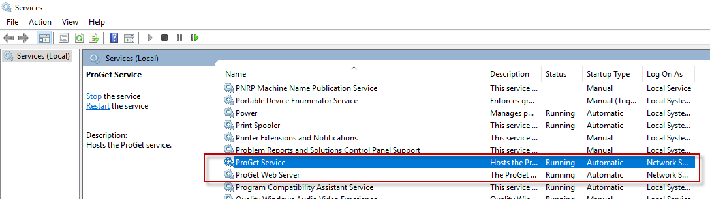
透過瀏覽器在本機的指定 port 上看到畫面如下：

Create Feeds
可以從 Feeds，新增一組類型的 Repo:
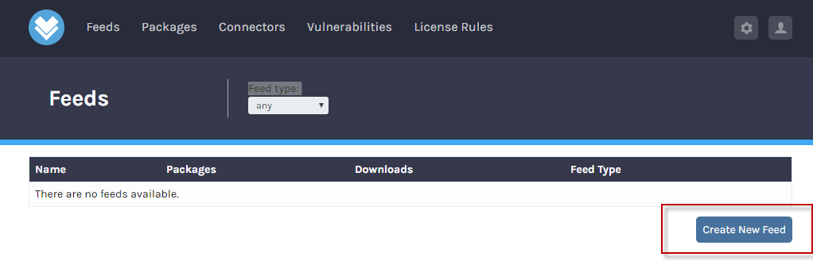
而當然同類型的 Repo 也可以不只建立一組：
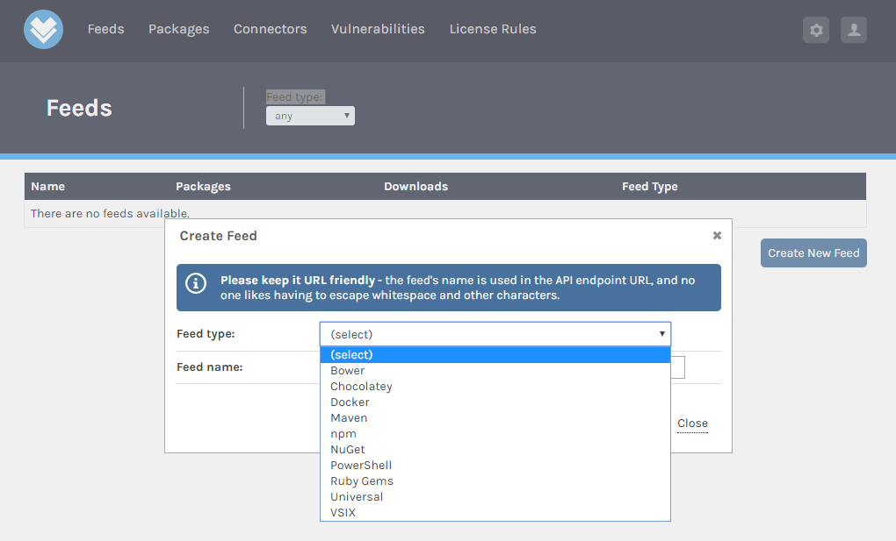
NuGet
如果是新增一個 NuGet 類型的 Repo 會看到多一個 NuGet API的屬性，這邊預設的密碼需要在安裝時透過 IIS 修改認證方式才能讓 NuGet 的 API Token 順利認證 ，而詳細的資訊可以參考：
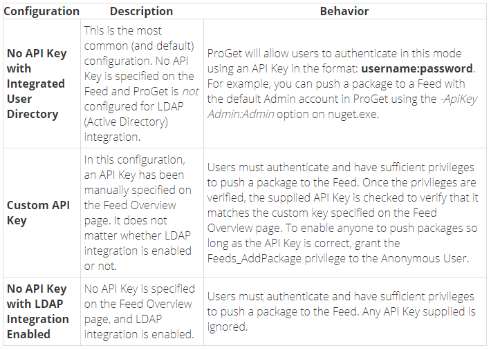
而這邊我用預設的方式 ApiKey 為
這邊 NuGet 的 Package 建立與上傳方式細節請參考Using Package from Private NuGet Server in TFS2017，以下只節錄重點修改：
這邊可以從 NuGet 加入一個新的 Repo 來源：
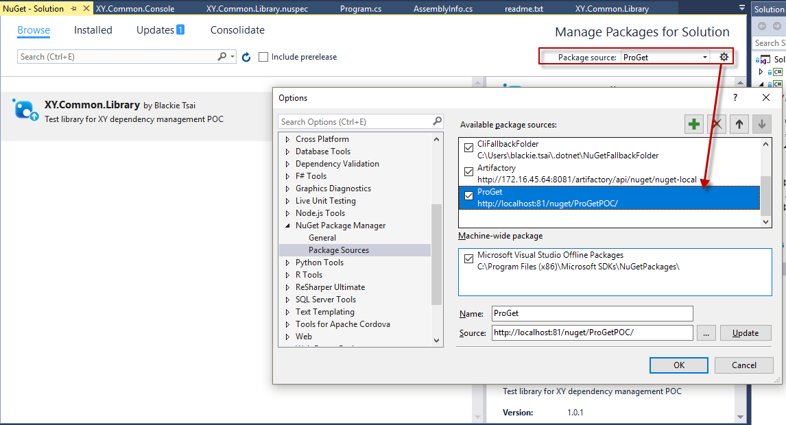
而針對已經準備好的 NuGet Package 專案檔則可以透過以下指令建立 NuGet Repo 與上傳:
nuget setapikey <account>:<password> -Source ProGet
nuget push XXX.1.0.0.nupkg -Source ProGet
上傳後從網站可以檢視到該套件內容：
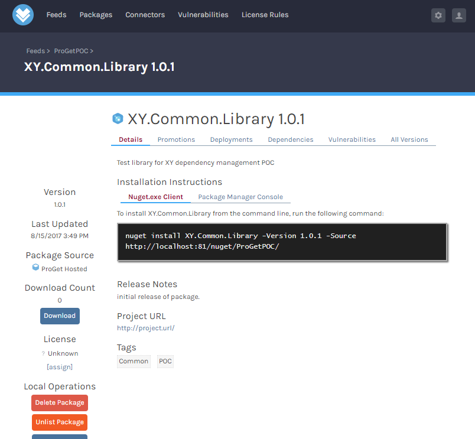
npm
而使用 npm 的 Package 建立與上傳方式細節請參考Using Package from Private NPM Regisry in TFS2017，這邊要注意的是發佈時因為沒有辦法在 .npmrc 檔案內設定 _auth ，所以建議透過以下指令新增使用者:
npm adduser接著輸入帳號與密碼，如果是輸入預設帳號可以直接輸入小寫admin但輸入密碼時一定要相同的大小寫，即 Admin (<= 感謝 Larry 哥友善提醒錯字更正!)
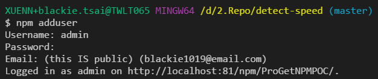
完成環境設定後，一樣到該 npm package 目錄下執行:
npm publish
上傳後就可以從瀏覽器看到該套件內容:
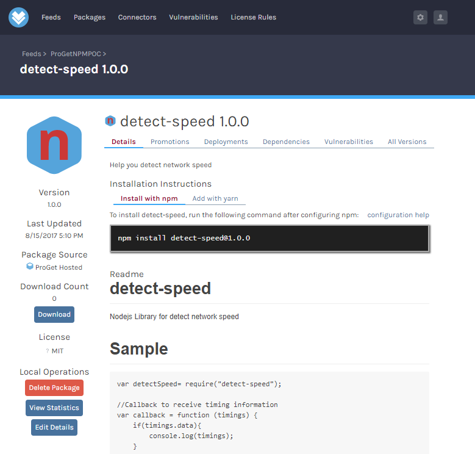
而相依性也可以從介面這邊直接看到：
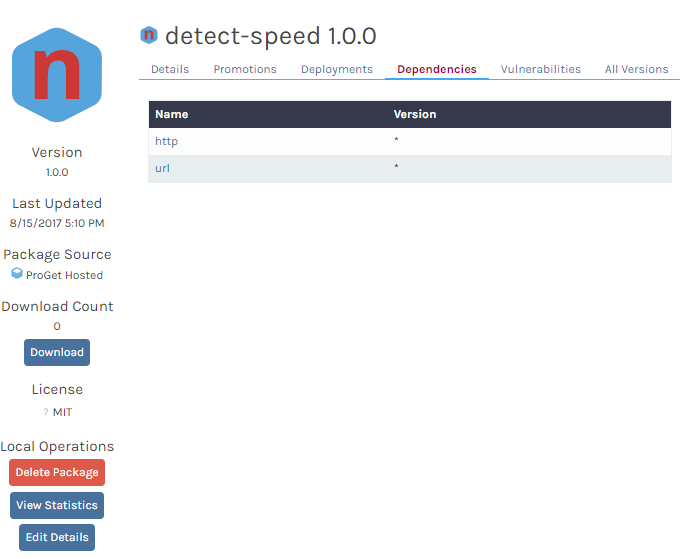
Maven
而 Maven 的支援度就很差了，僅支援手動上傳(提供一個 pom.xml 檔案)：
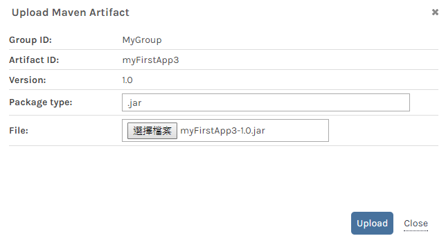
詳細的 Maven Package 製作可以參考Using Package from Maven and Package Management in TFS2017，上傳後即可以看到以下畫面：
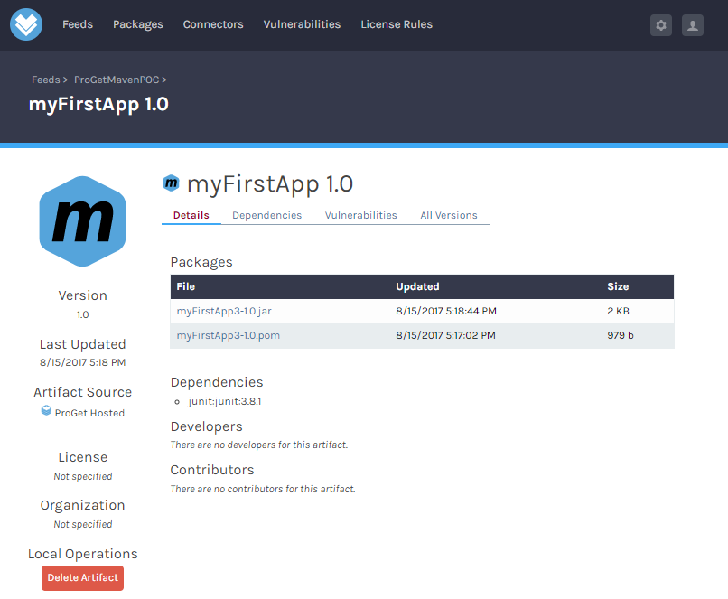
心得
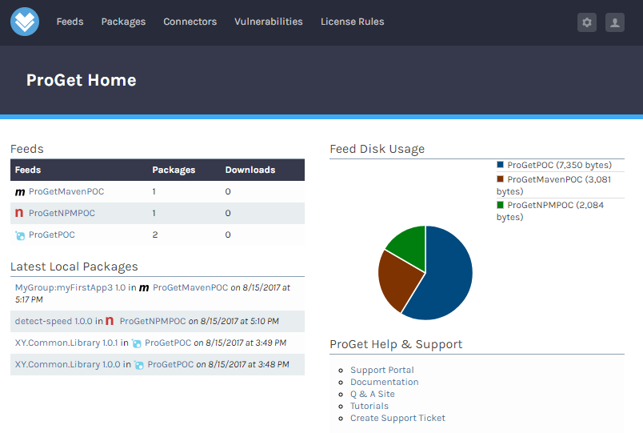
使用過 TFS, JFrog Artifactory 與 ProGet 後，目前單比較種類上的支援，首推還是 JFrog Artifactory。而從CI/CD Support 來講 TFS 或許還有成長空間而其他兩者因為開發商將其猜分為不同產品的功能就稍微受限一點。